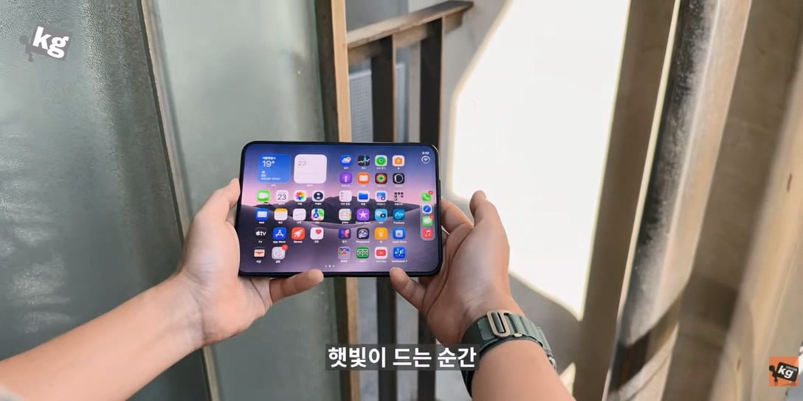
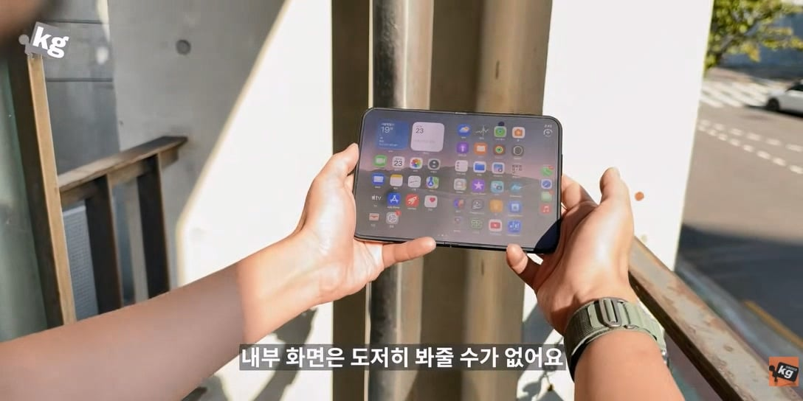
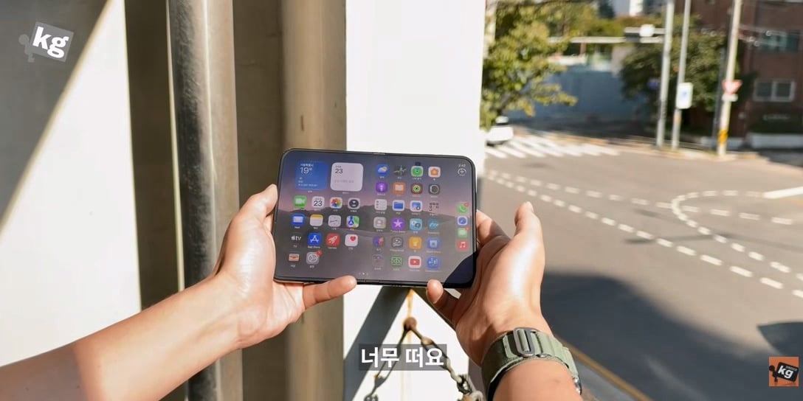

주름 안보이게 하기위해 나노텍스쳐를 사용
그덕분에 주름 안보이는건 좋은데
문제는 밖에서 햇빛받으면 뿌옇게 보임
실내에서도 색이 어두우면 뿌옇게 뜸



주름 안보이게 하기위해 나노텍스쳐를 사용
그덕분에 주름 안보이는건 좋은데
문제는 밖에서 햇빛받으면 뿌옇게 보임
실내에서도 색이 어두우면 뿌옇게 뜸
무슨 일 있었어???
운영진이 목업을 중고로 팔다 걸렸고 잠깐 내보냈다 다시 운영진 하고있음
목업 팔면 안되는겨?
목업일수도 아닐수도 있다면서 팔았으니까..
목업이라고 밝히고 팔면 되는데 목업도 있고 제품도 있고 랜덤이라고 하며 제품값 받고 교환 환불 불가로 판게 문제지
미친 ㅋㅋ
ㅎㄷㄷㄷ
마! 갬성값 모르나? 갬성값!
진짜로 펼치는거 쓸려고 샀겠나? 저가격을!
저거는그냥
내가 아이폰 듀오를 사용한다는 나자신한테 취할려고 사는거야
감성 모르나
간단히 말하면 주름이 덜 보이게 하기위해서
필름을 한겹 더 붙였네
간단히 말하면 필름붙인게 아니고 표면 갈아낸거
필름 맞음
유튜브 보다보면 저 나노텍스쳐 필름 뜯는 영상도 나옴
필름 맞음
유튜브 보다보면 저 나노텍스쳐 필름 뜯는 영상도 나옴
2세대에 저거 고치고 100만원 더 받을 듯 ㅋㅋㅋㅋㅋ
올해의 사원 임명드립니다.
더 선명한 색감 오직 아이폰 듀오에서!

핸드폰 볼 시간에 맑은 날씨를 즐기라는 애플의 철학이 느껴지네요
통쾌하네요
아침에 길에서 폴드8 펼쳐서 봤는데 그것도 뿌옇긴 하더라
빛 반사되는거지 뿌옇진 않아
밝기가 낮아서 그렇게 느낄 순 있겠다
폰은 집에서 쓰는거지 밖에서는 사람들이랑 커뮤니케이션 하라는 감성 오지는 애플의 설계
통쾌했어요
아이패드프로도 나노텍스쳐는 저지랄임
기껏 oled 써놓고 화면 존나 뿌얘짐
나노 텍스쳐로 살까 했는데 그거 펜슬 쓰다보면 맨들맨들해져서 또 이상하다며? 사실이여?
일반 액정보다 빨리 마모 된다고 컬러스케일 에서 실험한거 있음
레알이면 참나 그냥 보호필름으로 붙이게 해야지 더 비싼돈 받고팔면서말여
맨들맨들하게 부분부분 닳아서 더 거지 같아짐
차라리 걍 종이질감 필름 붙여
그건 갈면 그만인데 나노텍스쳐는 화면에 박아버리는거라 그것도 안돼
뭐여 아까 썸넬에서는 너무 좋다고 하더만
듀오 반응 좋을 때: 디스플레이 전부 애플에서 설계한 거고 삼성은 외주 생산만 한 거임!! 애플이 다 만든 거다!!
듀오 반응 좆박을 때: 디스플레이 삼성에서 만든 거잖아? 삼성 주가 꼬라 박겠네 ㅉ
뉴 네오 나노텍스쳐 인줄 알았는데 재탕이였어?

그놈의 감성드립 지겹다 진짜ㅋㅋㅋㅋ
하지만 통쾌했죠?
역시 1세대는 사는게 아니긴하다
나노텍스쳐가 원래 저런 기술 아냐?
전체적인 선명도 저하 대신, 햇빛 받았을 때, 반사광 줄여서 읽을수는 있게 만들어주는?
ar필름 붙이면 안돼?
저 필름이 맨질맨질하지 않아서 그 위에 잘 안붙을듯
내부 필름 갤럭시처럼 바꿔야 봐줄만한듯
ㅋㅋㅋ 그정도 아님 ㅋㅋㅋ
사기kg 부고만